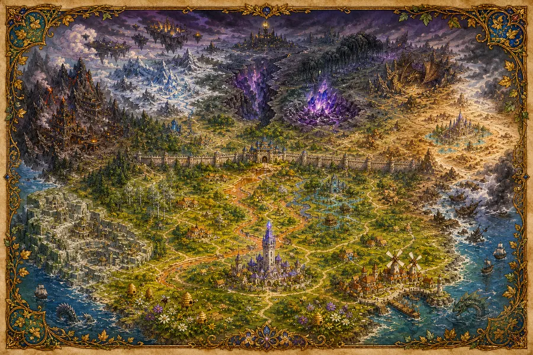
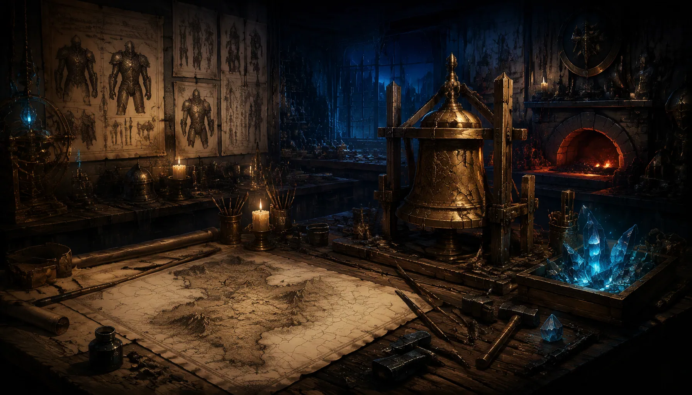

Os que ouvem
Vowborn
Pouso do Sino
Gente de mel, palha e bronze. Na primeira noite de monstros não havia exército: houve um sino e um voto. Desde então, ninguém dorme sem guarda.

RPG de ação online · em desenvolvimento
Onde um sino se cala, o cristal brota bravo, nascem monstros e gente some. Escolha sua tribo, acenda os sinos de Ermândia e suba para o norte.
O mundo
Há três gerações, numa só noite, cristais azuis romperam o chão, os sinos se calaram e as estátuas dos reis caíram de rosto para o sul. O rei mandou uma hoste ao norte, e nunca mais se falou o nome dele.
Do reino sobraram três tribos, um domo de proteção sustentado por sinos e uma torre de cristal no horizonte que ninguém aponta.

Três tribos, doze classes
Os que ouvem
Pouso do Sino
Gente de mel, palha e bronze. Na primeira noite de monstros não havia exército: houve um sino e um voto. Desde então, ninguém dorme sem guarda.

Os que cuidam
Pedrabrota
Pedreiros e plantadores da serra. Para eles o cristal é colheita: planta-se, poda-se e respeita-se. Lentos, pesados e orgulhosos do que fazem com as mãos.

Os que lembram
Campavela
O que restou da hoste que marchou ao norte e voltou menor. Cada morto tem vela e nome. Disciplina de fila, e ninguém fica para trás duas vezes.
Heróis
Bestiário
O jogo rodando

Em construção, às claras
Acompanhe o que entrou no jogo, o que está na forja agora e o que vem depois.


 Goblin Saqueador
Goblin Saqueador Gosma-Mel
Gosma-Mel Lebre-Chifre
Lebre-Chifre Rei Gorjal, o Grande Saqueador
Rei Gorjal, o Grande Saqueador